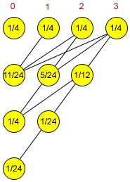

It has been said that life is a school of probability. A major effect of probability theory on everyday life is in risk assessment. Let's suppose you have an exam and you are not so well prepared. There are 20 possible subjects, but you only had time to prepare for 15. If two subjects are given, what chances do you have to be familiar with both? This is an example of a simple question inspired by the world in which we live today. Life is a very complex chain of events and almost everything can be imagined in terms of probabilities.
Gambling has become part of our lives and it is an area in which probability theory is obviously involved. Although gambling had existed since time immemorial, it was not until the seventeenth century that the mathematical foundations finally became established. It all started with a simple question directed to Blaise Pascal by Chevalier de Méré, a nobleman that gambled frequently to increase his wealth. The question was whether a double six could be obtained on twenty-four rolls of two dice.
As far as TopCoder problems are concerned, they're inspired by reality. You are presented with many situations, and you are explained the rules of many games. While it's easy to recognize a problem that deals with probability computations, the solution may not be obvious at all. This is partly because probabilities are often overlooked for not being a common theme in programming challenges. But it is not true and TopCoder has plenty of them! Knowing how to approach such problems is a big advantage in TopCoder competitions and this article is to help you prepare for this topic.
Before applying the necessary algorithms to solve these problems, you first need some mathematical understanding. The next chapter presents the basic principles of probability. If you already have some experience in this area, you might want to skip this part and go to the following chapter: Step by Step Probability Computation. After that it follows a short discussion on Randomized Algorithms and in the end there is a list with the available problems on TopCoder. This last part is probably the most important. Practice is the key!
Basics
Working with probabilities is much like conducting an experiment. An outcome is the result of an experiment or other situation involving uncertainty. The set of all possible outcomes of a probability experiment is called a sample space. Each possible result of such a study is represented by one and only one point in the sample space, which is usually denoted by S.
Let's consider the following experiments:
Sample space S = {1, 2, 3, 4, 5, 6}
Tossing two coins
Sample space S = {(Heads, Heads), (Heads, Tails), (Tails, Heads), (Tails, Tails)}
We define an event as any collection of outcomes of an experiment. Thus, an event is a subset of the sample space S. If we denote an event by E, we could say that E⊆S. If an event consists of a single outcome in the sample space, it is called a simple event. Events which consist of more than one outcome are called compound events.
What we are actually interested in is the probability of a certain event to occur, or P(E). By definition, P(E) is a real number between 0 and 1, where 0 denotes the impossible event and 1 denotes the certain event (or the whole sample space).

Image 1. Sample space
As stated earlier, each possible outcome is represented by exactly one point in the sample space. This leads us to the following formula:

That is, the probability of an event to occur is calculated by dividing the number of favorable outcomes (according to the event E) by the total number of outcomes (according to the sample space S).
In order to represent the relationships among events, you can apply the known principles of set theory. Consider the experiment of rolling a die once. As we have seen previously, the sample space is S = {1, 2, 3, 4, 5, 6}. Let's now consider the following events:
Event B = 'score is odd' = {1, 3, 5}
Event C = 'score is 7' = ∅
A∪B ='the score is > 3 or odd or both' = {1, 3, 4, 5, 6}
A∩B ='the score is > 3 and odd' = {5}
A' = 'event A does not occur' = {1, 2, 3}
We have:
P(A∩B) = 1/6
P(A') = 1 - P(A) = 1 - 1/2 = 1/2
P(C) = 0
The first step when trying to solve a probability problem is to be able to recognize the sample space. After that, you basically have to determine the number of favorable outcomes. This is the classical approach, but the way we implement it may vary from problem to problem. Let's take a look at QuizShow (SRM 223, Div 1 - Easy). The key to solving this problem is to take into account all the possibilities, which are not too many. After a short analysis, we determine the sample space to be the following:
(wager 1 is wrong, wager 2 is wrong, you are right),
(wager 1 is wrong, wager 2 is right, you are wrong),
(wager 1 is wrong, wager 2 is right, you are right),
(wager 1 is right, wager 2 is wrong, you are wrong),
(wager 1 is right, wager 2 is wrong, you are right),
(wager 1 is right, wager 2 is right, you are wrong),
(wager 1 is right, wager 2 is right, you are right) }
The problem asks you to find a wager that maximizes the number of favorable outcomes. In order to compute the number of favorable outcomes for a certain wager, we need to determine how many points the three players end with for each of the 8 possible outcomes. The idea is illustrated in the following program:
int wager (vector scores, int wager1, int wager2)
{
int best, bet, odds, wage, I, J, K;
best = 0; bet = 0;
for (wage = 0; wage ≤ scores[0]; wage++)
{
odds = 0;
// in 'odds' we keep the number of favorable outcomes
for (I = -1; I ≤ 1; I = I + 2)
for (J = -1; J ≤ 1; J = J + 2)
for (K = -1; K ≤ 1; K = K + 2)
if (scores[0] + I * wage > scores[1] + J * wager1 &&
scores[0] + I * wage > scores[2] + K * wager2) { odds++; }
if (odds > best) { bet = wage ; best = odds; }
// a better wager has been found
}
return bet;
}
Another good problem to start with is PipeCuts (SRM 233, Div 1 - Easy). This can be solved in a similar manner. There is a finite number of outcomes and all you need to do is to consider them one by one.
Let's now consider a series of n independent events: E1, E2, ... , En. Two surprisingly common questions that may appear (and many of you have already encountered) are the following:
- What is the probability that all events will occur?
- What is the probability that at least one event will occur?
To answer the first question, we relate to the occurrence of the first event (call it E1). If E1 does not occur, the hypothesis can no longer be fulfilled. Thus, it must be inferred that E1 occurs with a probability of P(E1). This means there is a P(E1) chance we need to check for the occurrence of the next event (call it E2). The event E2 occurs with a probability of P(E2) and we can continue this process in the same manner. Because probability is by definition a real number between 0 and 1, we can synthesize the probability that all events will occur in the following formula:

The best way to answer the second question is to first determine the probability that no event will occur and then, take the complement. We have:

These formulae are very useful and you should try to understand them well before you move.
BirthdayOdds
A good example to illustrate the probability concepts discussed earlier is the classical "Birthday Paradox". It has been shown that if there are at least 23 people in a room, there is a more than 50% chance that at least two of them will share the same birthday. While this is not a paradox in the real sense of the word, it is a mathematical truth that contradicts common intuition. The TopCoder problem asks you to find the minimum number of people in order to be more than minOdds% sure that at least two of them have the same birthday. One of the first things to notice about this problem is that it is much easier to solve the complementary problem: "What is the probability that N randomly selected people have all different birthdays?". The strategy is to start with an empty room and put people in the room one by one, comparing their birthdays with those of them already in the room:
int minPeople (int minOdds, int days)
{
int nr;
double target, p;
target = 1 - (double) minOdds / 100;
nr = 1;
p = 1;
while (p > target)
{
p = p * ( (double) 1 - (double) nr / days);
nr ++;
}
return nr;
}
This so called "Birthday Paradox" has many real world applications and one of them is described in the TopCoder problem called Collision (SRM 153, Div 1 - Medium). The algorithm is practically the same, but one has to be careful about the events that may alter the sample space.
Sometimes a probability problem can be quite tricky. As we have seen before, the 'Birthday Paradox' tends to contradict our common sense. But the formulas prove to us that the answer is indeed correct. Formulas can help, but to become a master of probabilities you need one more ingredient: "number sense". This is partly innate ability and partly learned ability acquired through practice. Take this quiz to assess your number sense and to also become familiar with some of the common probability misconceptions.
Step by Step Probability Computation
this chapter we will discuss some real TopCoder problems in which the occurrence of an event is influenced by occurrences of previous events. We can think of it as a graph in which the nodes are events and the edges are dependencies between them. This is a somewhat forced analogy, but the way we compute the probabilities for different events is similar to the way we traverse the nodes of a graph. We start from the root, which is the initial state and has a probability of 1. Then, as we consider different scenarios, the probability is distributed accordingly.
NestedRandomness
problem looked daunting to some people, but for those who figured it out, it was just a matter of a few lines. For the first step, it is clear what do we have to do: the function random(N) is called and it returns a random integer uniformly distributed in the range 0 to N-1. Thus, every integer in this interval has a probability of 1/N to occur. If we consider all these outcomes as input for the next step, we can determine all the outcomes of the random(random(N)) call. To understand this better, let's work out the case when N = 4.
|
 NestedRandomness for N = 4 |
The source code for this problem is given below:
double probability (int N, int nestings, int target)
{
int I, J, K;
double A[1001], B[2001];
// A[I] represents the probability of number I to appear
for (I = 0; I < N ; I++) A[I] = (double) 1 / N;
for (K = 2; K ≤ nestings; K++)
{
for (I = 0; I < N; I++) B[I] = 0;
// for each I between 0 and N-1 we call the function "random(I)"
// as described in the problem statement
for (I = 0; I < N; I++)
for (J = 0; J < I; J++)
B[J] += (double) A[I] / I;
for (I = 0; I < N; I++) A[I] = B[I];
}
return A[target];
}
you got the taste for this problem, here are another five you may want to try:
- ChessKnight - assign each square a probability and for every move check the squares one by one to compute the probabilities for the next move.
- DiceThrows - determine the probability of each possible outcome for both players and then compare the results.
- RockSkipping - the same approach, just make sure you got the lake pattern correctly.
- PointSystem - represent the event space as a matrix of possible scores (x, y).
- VolleyBall - similar to PointSystem, but the scores may go up pretty high.
Let's now take a look at another TopCoder problem, GeneticCrossover, which deals with conditional probability. Here, you are asked to predict the quality of an animal, based on the genes it inherits from its parents. Considering the problem description, there are two situations that may occur: a gene does not depend on another gene, or a gene is dependent.
For the first case, consider p the probability that the gene is to be expressed dominantly. There are only 4 cases to consider:
- at least one parent has two dominant genes. (p = 1)
- each parent has exactly one dominant gene. (p = 0.5)
- one parent has one dominant gene and the other has only recessive genes (p = 0.25)
- both parents have two recessive genes (p = 0)
Now let's take the case when a gene is dependent on another. This make things a bit trickier as the "parent" gene may also depend on another and so on ... To determine the probability that a dependent gene is dominant, we take the events that each gene in the chain (starting with the current gene) is dominant. In order for the current gene to be expressed dominantly, we need all these events to occur. To do this, we take the product of probabilities for each individual event in the chain. The algorithm works recursively. Here is the complete source code for this problem:
int n, d[200];
double power[200];
// here we determine the characteristic for each gene (in power[I]
// we keep the probability of gene I to be expressed dominantly)
double detchr (string p1a, string p1b, string p2a, string p2b, int nr)
{
double p, p1, p2;
p = p1 = p2 = 1.0;
if (p1a[nr] ≤ 'Z') p1 = p1 - 0.5;
// is a dominant gene
if (p1b[nr] ≤ 'Z') p1 = p1 - 0.5;
if (p2a[nr] ≤ 'Z') p2 = p2 - 0.5;
if (p2b[nr] ≤ 'Z') p2 = p2 - 0.5;
p = 1 - p1 * p2;
if (d[nr] != 1) power[nr] = p * detchr (p1a, p1b, p2a, p2b, d[nr]);
// gene 'nr' is dependent on gene d[nr]
else power[nr] = p;
return power[nr];
}
double cross (string p1a, string p1b, string p2a, string p2b,
vector <int> dom, vector <int> rec, vector <int> dependencies)
{
int I;
double fitness = 0.0;
n = rec.size();
for (I = 0; I < n; i++) d[i] = dependencies[i];
for (I = 0 ;I < n; I++) power[i] = -1.0;
for (I = 0; I < n; i++)
if (power[I] == -1.0) detchr (p1a, p1b, p2a, p2b, i);
// we check if the dominant character of gene I has
// not already been computed
for (I = 0; I ≤ n; I++)
fitness=fitness+(double) power[i]*dom[i]-(double) (1-power[i])*rec[i];
// we compute the expected 'quality' of an animal based on the
// probabilities of each gene to be expressed dominantly
return fitness;
}
See also ProbabilityTree.
Randomized Algorithms
We call randomized algorithms those algorithms that use random numbers to make decisions during their execution. Unlike deterministic algorithms that for a fixed input always give the same output and the same running-time, a randomized algorithm behaves differently from execution to execution. Basically, we distinguish two kind of randomized algorithms:
- Monte Carlo algorithms: may sometimes produce an incorrect solution - we bound the probability of failure.
- Las Vegas algorithms: always give the correct solution, the only variation is the running time - we study the distribution of the running time.
Read these lecture notes from the College of Engineering at UIUC for an example of how these algorithms work.
The main goal of randomized algorithms is to build faster, and perhaps simpler solutions. Being able to tackle "harder" problems is also a benefit of randomized algorithms. As a result, these algorithms have become a research topic of major interest and have already been utilized to more easily solve many different problems.
An interesting question is whether such an algorithm may become useful in TopCoder competitions. Some problems have many possible solutions, where a number of which are also optimal. The classical approach is to check them one by one, in an established order. But it cannot be guaranteed that the optima are uniformly distributed in the solution domain. Thus, a deterministic algorithm may not find you an optimum quickly enough. The advantage of a randomized algorithm is that there are actually no rules to set about the order in which the solutions are checked and for the cases when the optima are clustered together, it usually performs much better. See QueenInterference for a TopCoder example.
Randomized algorithms are particularly useful when faced with malicious attackers who deliberately try to feed a bad input to the algorithm. Such algorithms are widely used in cryptography, but it sometimes makes sense to also use them in TopCoder competitions. It may happen that you have an efficient algorithm, but there are a few degenerate cases for which its running time is significantly slower. Assuming the algorithm is correct, it has to run fast enough for all inputs. Otherwise, all the points you earned for submitting that particular problem are lost. This is why here, on TopCoder, we are interested in worst case execution time.
To challenge or not to challenge?
Another fierce coding challenge is now over and you have 15 minutes to look for other coders' bugs. The random call in a competitor's submission is likely to draw your attention. This will most likely fall into one of two scenarios:
- the submission was just a desperate attempt and will most likely fail on many inputs.
- the algorithm was tested rather thoroughly and the probability to fail (or time out) is virtually null.
The first thing you have to do is to ensure it was not already unsuccessfully challenged (check the coder's history). If it wasn't, it may deserve a closer look. Otherwise, you should ensure that you understand what's going on before even considering a challenge. Also take into account other factors such as coder rating, coder submission accuracy, submission time, number of resubmissions or impact on your ranking.
Will "random" really work?
In most optimizing problems, the ratio between the number of optimal solutions and the total number of solutions is not so obvious. An easy, but not so clever solution, is to simply try generating different samples and see how the algorithm behaves. Running such a simulation is usually pretty quick and may also give you some extra clues in how to actually solve the problem.
Max = 1000000; attempt = 0;
while (attempt < Max)
{
answer = solve_random (...);
if (better (answer, optimum))
// we found a better solution
{
optimum = answer;
cout << "Solution " << answer << " found on step " << attempt << "\n";
}
attempt ++;
}
Practice Problems
Level 1
- PipeCuts - SRM 233
- BirthdayOdds - SRM 174
- BenfordsLaw - SRM 155
- QuizShow - SRM 223
Level 2
- Collision - SRM 153
- ChessKnight - TCCC05 Round 1
- ChipRace - SRM 199
- DiceThrows - SRM 242
- TopFive - SRM 243
- ProbabilityTree - SRM 174
- OneArmedBandit - SRM 226
- RangeGame - SRM 174
- YahtzeeRoll - SRM 222
- BagOfDevouring - SRM 184
- VolleyBall - TCO04 Round 3
- RandomFA - SRM 178
- PackageShipping - TCCC05 Round 3
- QueenInterference - SRM 208
- BaseballLineup - TCO '03 Finals
Level 3
- GeneticCrossover - TCO04 Qual 3
- NestedRandomness - TCCC05 Qual 5
- RockSkipping - TCCC '04 Round 1
- PointSystem - SRM 174
- AntiMatter - SRM 179
- TestScores - SRM 226
- Hangman42 - SRM 229
- KingOfTheCourt - SRM 222
- WinningProbability - SRM 218
- Disaster - TCCC05 Semi 1